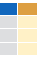
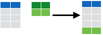
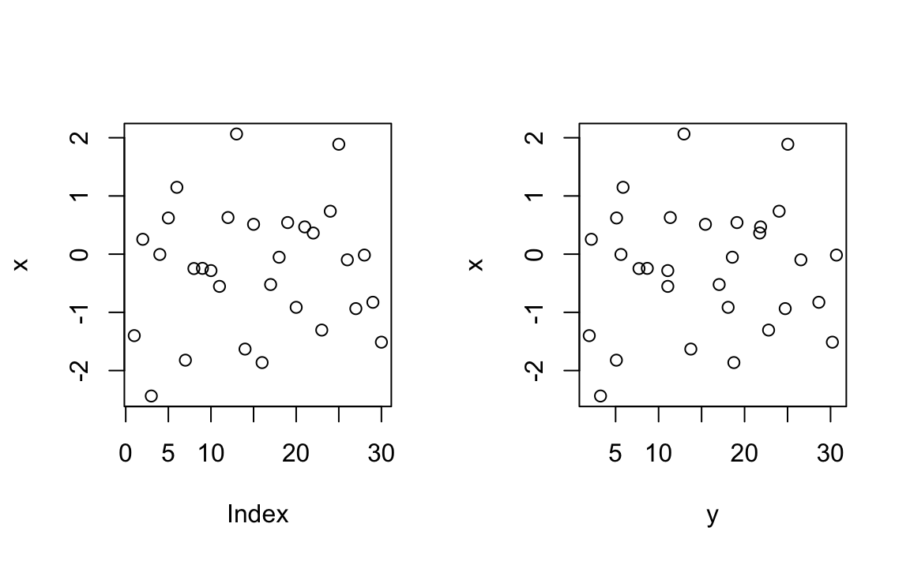
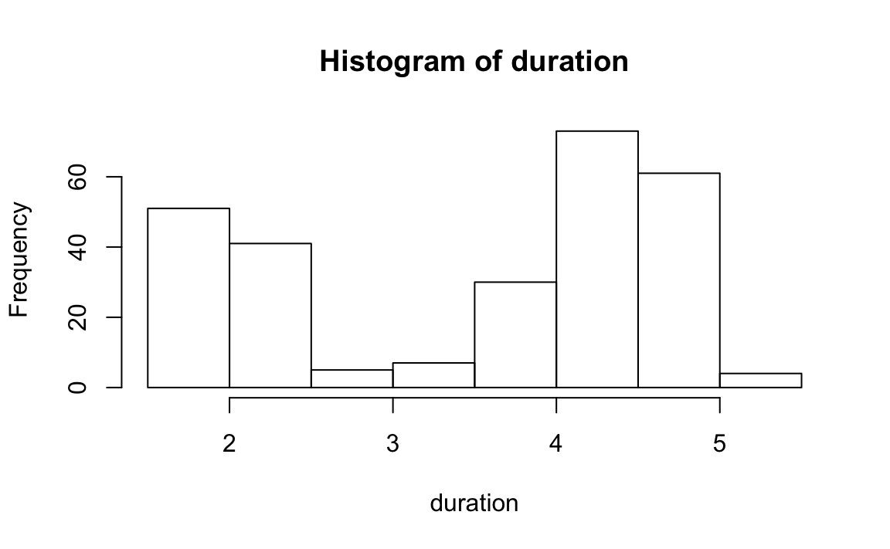

Chapter 2 Base R
2.1 Running R code
도움말 Getting Help
도움말 보기
?mean
“특정함수”에 대한 도움말 보기
help.search(‘weighted mean’)
“특정 용어”에 대한 도움말 검색
help(package = ‘dplyr’)
“특정 패키지”에 대한 도움말 보기
객체에 대한 정보 보기
str(iris)
객체 구조에 대한 요약정보 보기
class(iris)
객체의 class 조회
패키지 Using Packages
install.packages(‘dplyr’)
Download and install a package from CRAN.
library(‘dplyr’)
Load the package, making all its functions available to use.
dplyr::select
Use a particular function from a package
data(iris)
Load a built-in dataset into the environment.
워킹디렉토리 Working Directory
getwd()
Find the current working directory.
setwd(‘D://file/path’)
Change the current working directory.
Use Projects in RStudio to set the working directory to the folder you are working in.
Vectors
Creating Vectors
c(2, 4, 6) # Join elements into a vector
#> [1] 2 4 6
2:6 # An interger sequence
#> [1] 2 3 4 5 6
seq(2, 3, by=0.5) # A complex sequence
#> [1] 2.0 2.5 3.0
rep(1:2, times=3) # Repeat a vector
#> [1] 1 2 1 2 1 2
rep(1:2, each=3) # Repeat elements of a vector
#> [1] 1 1 1 2 2 2
Vector Functions
x <- c(3,2,6,1,6,2)
sort(x)
#> [1] 1 2 2 3 6 6
rev(x)
#> [1] 2 6 1 6 2 3
table(x)
#> x
#> 1 2 3 6
#> 1 2 1 2
unique(x)
#> [1] 3 2 6 1
Selecting Vector Elements
By Position
x <- c(3,2,6,1,6,2)
x[4]
#> [1] 1
x[-4]
#> [1] 3 2 6 6 2
x[2:4]
#> [1] 2 6 1
x[-(2:4)]
#> [1] 3 6 2
x[c(1,5)]
#> [1] 3 6
By Value
x <- c(3,2,6,1,6,2)
x[x==6]
#> [1] 6 6
x[x<3]
#> [1] 2 1 2
x[x %in% c(2,6)]
#> [1] 2 6 6 2
Named Vectors
x['apple']
프로그래밍 Programming
For Loop
for (variable in sequance){
Do something
}for (i in 1:4){
j <- i + 10
print(j)
}
#> [1] 11
#> [1] 12
#> [1] 13
#> [1] 14
While Loop
while (condition){
Do something
}while (i < 5){
print(i)
i <- i + 1
}
#> [1] 4
If Statements
if (condition){
Do something
} else {
Do something different
}i = 5
if (i > 3){
print('Yes')
} else {
print('No')
}
#> [1] "Yes"
Functions
function_name <- function(var){
Do something
return(new_variable)
}square <- function(x){
squared <- x * x
return(squared)
}
square(5)
#> [1] 25
Condtions
a == b
a != b
a > b
a < b
a >= b
a <= b
is.na(a)
is.null(a)
a <- c(1, 4, NA, 6)
is.na(a)
#> [1] FALSE FALSE TRUE FALSE
is.null(a)
#> [1] FALSE
파일 입출력 Reading and Writing Data
## create txt file
# fileConn<-file("file.txt")
# writeLines(c("Hello","World"), fileConn)
# close(fileConn)
df <- c("Hello","World")
write.table(df, 'file2.txt')
df2 <- read.table('file2.txt')
print(df2)
#> x
#> 1 Hello
#> 2 Worlddf <- c("apple","graph")
write.csv(df, 'file3.csv')
df3 <- read.csv('file3.csv')
print(df3)
#> X x
#> 1 1 apple
#> 2 2 graphdf <- c("apple3","graph3")
save(df, file = 'file4.Rdata')
load('file4.Rdata')
print(df)
#> [1] "apple3" "graph3"
객체 타입 Types
Coverting between common data types in R. Can always go from a higher value i the table to a lower value
a <- c(TRUE, FALSE, TRUE)
print(a)
#> [1] TRUE FALSE TRUE
typeof(a)
#> [1] "logical"
a <- as.numeric(a)
print(a)
#> [1] 1 0 1
typeof(a)
#> [1] "double"
a <- as.logical(a)
print(a)
#> [1] TRUE FALSE TRUE
typeof(a)
#> [1] "logical"
a <- as.character(a)
print(a)
#> [1] "TRUE" "FALSE" "TRUE"
typeof(a)
#> [1] "character"
a <- as.factor(a)
print(a)
#> [1] TRUE FALSE TRUE
#> Levels: FALSE TRUE
typeof(a)
#> [1] "integer"
Math Functions
log(x)
sum(x)
exp(x)
mean(x)
median(x)
max(x)
min(x)
round(x, n)
rank(x)
signif(x, n)
var(x)
cor(x, y)
sd(x)
Variable Assignment
a <- 'apple'
a
#> [1] "apple"
The Environment
rm(list = ls())
a <- "apple"
b <- c(1,2,3)
c <- 1
ls()
#> [1] "a" "b" "c"
rm(a)
ls()
#> [1] "b" "c"
rm(list = ls())You can use the environment panel in RStudio to browse variable in your environment.
매트릭스 Matrices
matrix basic
m <- matrix(x, nrow = 3, ncol = 3)
matrix 생성
m[2, ]
Select a row
m[ , 1]
Select a column
m[2, 3]
Select an element
matrix 연산
t(m)
Transpose
m %*% n
Matrix Muliplication
solve(m, n)
Find x in: m * x = n
Lists
A list is a collection of elements which can be of different types.
# List 생성
l <- list(x = 1:5, y = c('a','b'))
l
#> $x
#> [1] 1 2 3 4 5
#>
#> $y
#> [1] "a" "b"
# List subset
l[[2]]
#> [1] "a" "b"
l[1]
#> $x
#> [1] 1 2 3 4 5
l$x
#> [1] 1 2 3 4 5
l['y']
#> $y
#> [1] "a" "b"
Data Frames
A special case of list where all elements are the same length.
# Data Frame 생성
df <- data.frame(x=1:3, y = c('a','b','c'))
df
#> x y
#> 1 1 a
#> 2 2 b
#> 3 3 c
# Understanding a data frame
# View(df)
head(df, 2)
#> x y
#> 1 1 a
#> 2 2 b
nrow(df)
#> [1] 3
ncol(df)
#> [1] 2
dim(df)
#> [1] 3 2
Matrix subsetting

df[ , 2]
df[2, ]
df[2, 2]
df$x
df[[2]]
Binding data frames
cbind
Bind columns

rbind
Bind rows
A <- data.frame(x=1:3, y=c('a','b','c'))
B <- data.frame(y=11:13)
C <- data.frame(x=4:5, y=c('d','e'))
cbind(A, B)
#> x y y
#> 1 1 a 11
#> 2 2 b 12
#> 3 3 c 13
rbind(A, C)
#> x y
#> 1 1 a
#> 2 2 b
#> 3 3 c
#> 4 4 d
#> 5 5 e
Strings
# paste
x = "Hello"
y = "World!"
z = "My name is DK"
paste(x, y)
#> [1] "Hello World!"
paste(x, y, sep='')
#> [1] "HelloWorld!"
paste(x, y, sep='-')
#> [1] "Hello-World!"
paste(z, collapse=' ')
#> [1] "My name is DK"
# Find regular expression matches in x.
pattern = "DK"
replace = "Dookyung"
grep(pattern, z)
#> [1] 1
# replace matches in x with a string.
gsub(pattern, replace, z)
#> [1] "My name is Dookyung"
toupper(replace)
#> [1] "DOOKYUNG"
tolower(replace)
#> [1] "dookyung"
nchar(replace)
#> [1] 8
Factors
# Factors
factor(x)
cut(x, breaks = 4)
Statistics
lm(y ~ x, data=df)
Linear model.
glm(y ~ x, data=df)
Generalised linear model.
summary(x)
Get more detailed information out a model.
t.test(x, y)
Perform a t-test for different between means
pairwise.t.test()
Perform a t-test for paired data.
prop.test
Test for a difference between proportions.
aov
Analysis of variance.
Factors
# Factors
factor(x)
cut(x, breaks = 4)
Statistics
lm(y ~ x, data=df)
Linear model.
glm(y ~ x, data=df)
Generalised linear model.
summary(x)
Get more detailed information out a model.
t.test(x, y)
Perform a t-test for different between means
pairwise.t.test()
Perform a t-test for paired data.
prop.test
Test for a difference between proportions.
aov
Analysis of variance.
Distributions
| kind | Random_Var | Density_Func | Cumulative_Dist | Quantile |
|---|---|---|---|---|
| Normal | rnorm | dnorm | pnorm | qnorm |
| Poisson | rpois | dpois | ppois | qpois |
| Binomial | rbinom | dbinom | pbinom | qbinom |
| Uniform | runif | dunif | punif | qunif |
Plotting
x <- rnorm(30)
y <- rnorm(30) + 1:30
par(mfrow=c(1,2))
plot(x)
plot(y, x)
duration = faithful$eruptions
hist(duration, right=FALSE)